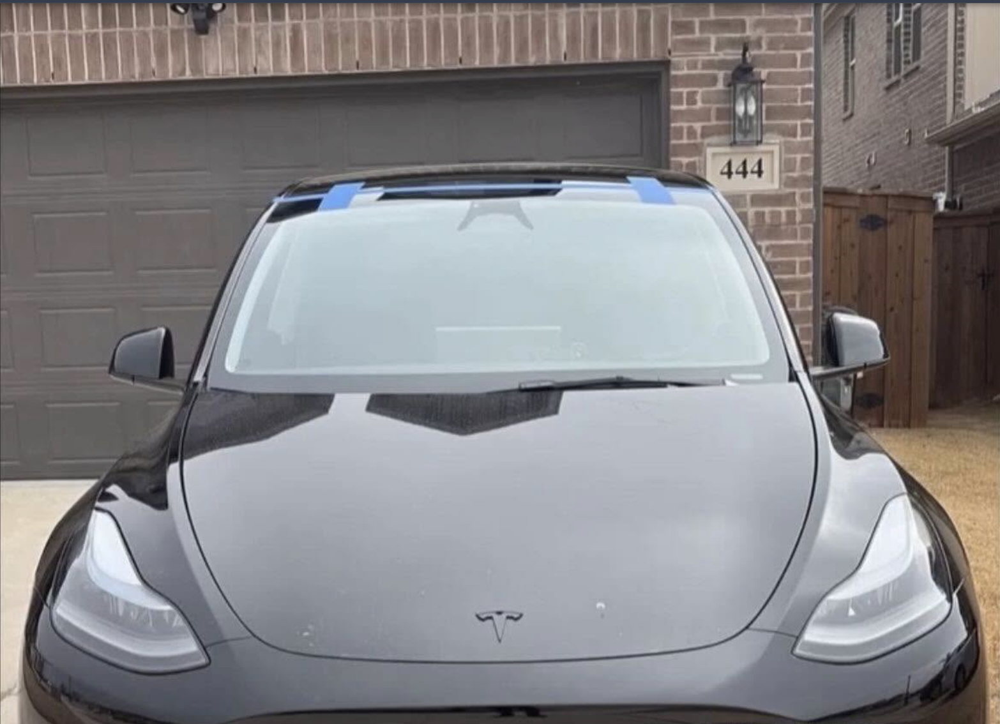
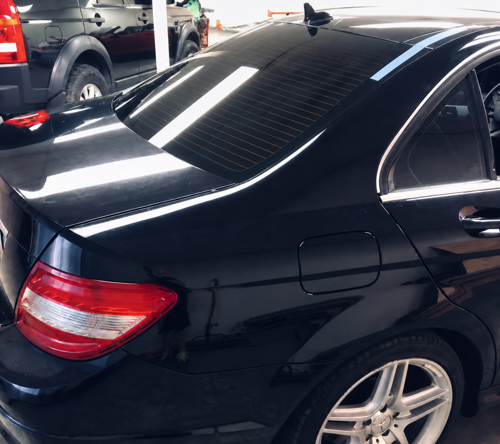
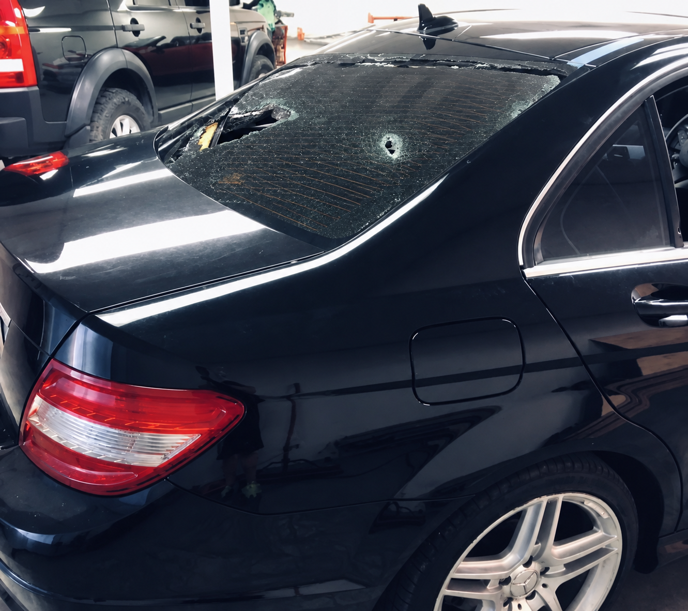

Windshield replacement
Quality glass, precise installation, and a clean finish that gets you back on the road with confidence.
Request a quote ↗Tulsa's trusted auto glass specialist
Professional windshield repair and replacement, done right the first time. Local service, honest pricing, and a finish you can see.
Trusted by Tulsa drivers
Real work. Real people.

What we do
From a small chip to a full windshield replacement, Gio brings careful workmanship and a straightforward experience to every vehicle.
Quality glass, precise installation, and a clean finish that gets you back on the road with confidence.
Request a quote ↗Address small damage before it spreads. We’ll help you understand what can be repaired and what needs replacing.
Ask about repair ↗Need us to come to you? Ask about mobile service availability in Tulsa and the surrounding area.
Check availability ↗See the difference
Swipe the handle to see a real before-and-after from Gio's Auto Glass. Every job is handled with the same care, whether it’s your daily driver or your pride and joy.


What customers say
Selected from the strongest recent public reviews on Google Maps. Read more experiences or leave your own review.
“They fit me in the same day, finished quickly, and the price was fair. My windshield is still holding up perfectly.”
“They took a last-minute windshield replacement and still got me back on the road that evening.”
“Gio was professional, quick, and communicated well. I’d recommend him to anyone who needs auto glass.”
The person behind the work
Gio's Auto Glass was built on a simple idea: people deserve honest answers and quality work when something important goes wrong. Gio brings a personal level of care to every appointment—from the first call to the final wipe-down.
Whether you’re dealing with a sudden crack or planning ahead, you’ll get clear communication, dependable service, and a job done with pride.
Talk to Gio ↗Let's get you moving
Send a few details and Gio will follow up with next steps and a clear quote. Prefer to talk? Call directly.